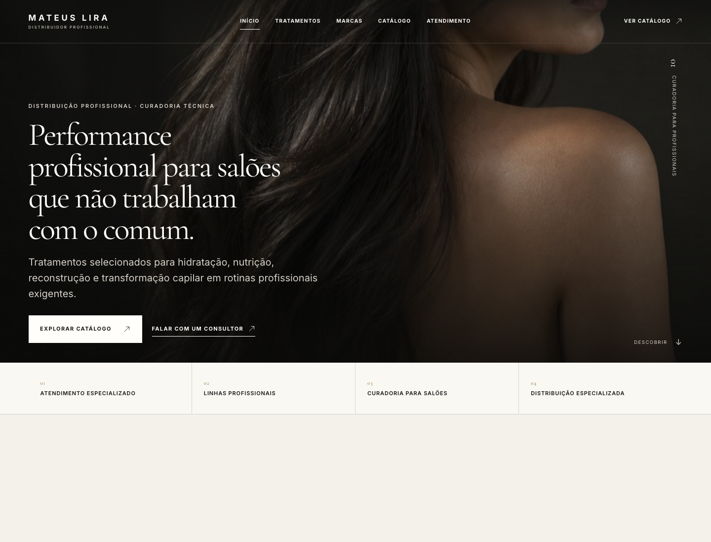
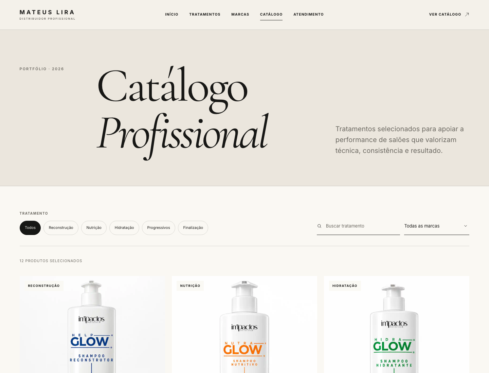
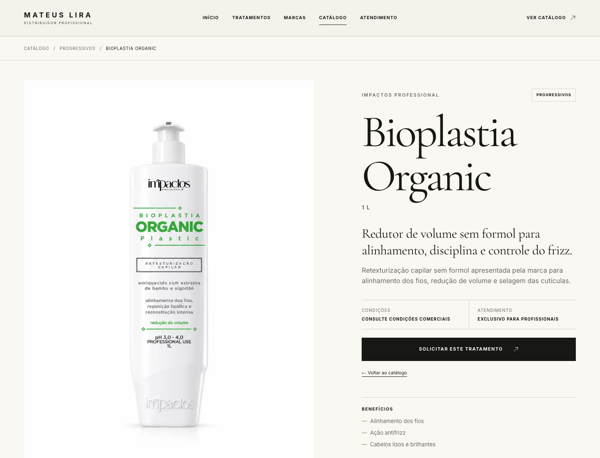
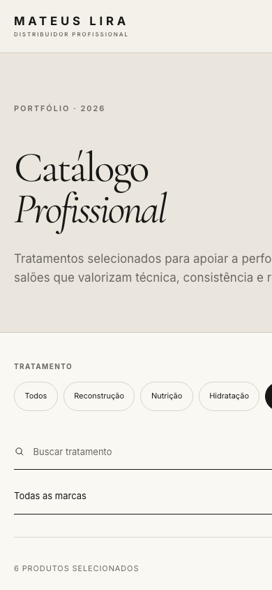

Informação espalhada
O salão demora mais para entender marcas, linhas e aplicações.

Apresentação comercial
Mais autoridade para a marca. Mais clareza para o cliente. Mais oportunidades para a equipe comercial.
A oportunidade
Quando não existe uma vitrine própria, a apresentação depende de mensagens soltas, catálogos enviados manualmente e explicações repetidas.
O site organiza essa primeira impressão antes mesmo do atendimento começar.O salão demora mais para entender marcas, linhas e aplicações.
O vendedor precisa explicar tudo antes de descobrir o interesse real.
Uma operação premium pode perder valor quando sua apresentação digital não acompanha.
Valor para a distribuidora
Uma apresentação premium aumenta a confiança de salões e profissionais na distribuidora.
O cliente pode conhecer tratamentos, marcas e produtos a qualquer momento.
A conversa começa com produto e volume já identificados no WhatsApp.
Um único link substitui parte das apresentações e explicações manuais.
Representantes podem compartilhar o catálogo em visitas, redes sociais e prospecção.
A estrutura aceita mais produtos e uma fonte de dados futura sem refazer a experiência.
Como o projeto converte
A home posiciona a distribuidora como uma operação profissional e premium.
O cliente encontra produtos por necessidade, categoria, marca ou busca.
Cada produto apresenta volume, benefícios, indicação e forma de uso.
O WhatsApp abre com produto e volume preenchidos para facilitar o atendimento.
Primeira impressão

O que dizer: “A pessoa entende em segundos que vocês atendem profissionais, trabalham com curadoria e não são apenas mais um catálogo comum.”
Experiência comercial



Entrega completa
Hero, posicionamento, diferenciais, tratamentos, destaques, marcas e atendimento.
12 produtos reais, duas marcas, cinco categorias e imagens correspondentes.
Busca textual, filtro por categoria e marca, contagem e limpeza de resultados.
Nome, linha, volume, descrição, benefícios, indicação, uso e relacionados.
Mensagens gerais e por produto com nome e volume preenchidos automaticamente.
Experiência adaptada para smartphone, tablet, notebook e telas grandes.
Tipografia editorial, fotografia forte, animações, hovers e ritmo visual próprio.
HTML semântico, foco visível, teclado, movimento reduzido e imagens otimizadas.
Configuração central da marca e catálogo desacoplado para futuras evoluções.
Impacto esperado
“Cada representante passa a carregar uma vitrine completa no bolso.”
Todos mostram a mesma marca, o mesmo catálogo e a mesma proposta de valor.
O link pode acompanhar visitas, Instagram, indicações, campanhas e contatos frios.
O interesse chega contextualizado, reduzindo etapas até a conversa comercial.
Novos produtos podem entrar sem perder o padrão da experiência.
Valor da solução
Faixa coerente para uma solução premium sob medida com estratégia, design, desenvolvimento e catálogo funcional.
Direção visual exclusiva e coerente com o público premium.
Home, catálogo, busca, filtros e páginas dinâmicas trabalham juntos.
Existe arquitetura, dados reais, responsividade, acessibilidade e performance.
A jornada termina em uma conversa comercial contextualizada.
Condição mais que especial
Opção 01 · À vista · INDIVIDUAL
R$ 3.000Opção 02 · Em 3 vezes · INDIVIDUAL
R$3.9003 parcelas de R$ 1.300Opção 03 · Em até 10x · INDIVIDUAL
R$no cartãoCondição coletiva
R$ 2.300 por distribuidor
R$ 300 mensais por site
Mais R$ 200 de economia mensal
Mesma estrutura, qualidade visual e conjunto de funcionalidades.
Nome, cores, contatos e WhatsApp configurados para cada distribuidor.
Seleção de produtos e conteúdo próprios dentro do padrão acordado.
Para finalizar juntos
A mensagem principal representa a forma como vocês querem ser percebidos?
Nome, contatos, região e WhatsApp estão definitivos?
Os 12 produtos são suficientes para o lançamento ou entra mais algum?
Quais quatro produtos devem aparecer em destaque na home?
As marcas, imagens e informações técnicas estão aprovadas para uso?
Já existe domínio ou devemos definir a publicação?
Quem dará o aceite final e qual é a melhor data para colocar no ar?
Decisões registradas, ajustes finais definidos e condição de fechamento escolhida.
Próximo passo
Com a direção aprovada, fechamos os últimos ajustes, validamos os contatos e preparamos a publicação.
Apoio do apresentador · não precisa projetar
“Eu entendo. O que pesa mais hoje: o valor total ou a forma de pagamento? Este projeto vale entre 10 e 15 mil no mercado e eu já trouxe uma condição muito especial pela nossa relação. Se for fluxo de caixa, escolhemos uma das formas de pagamento. Se os três confirmarem, o pacote reduz ainda mais o valor por site.”
Pergunte se o problema é preço, parcela, momento ou falta de percepção de retorno.
Relembre home, catálogo, produtos, mobile, WhatsApp, design e estrutura de crescimento.
Use parcelamento ou pacote coletivo antes de reduzir novamente o preço.
Se precisarem pagar menos, reduza a entrega de forma explícita. Não prometa o mesmo por menos.